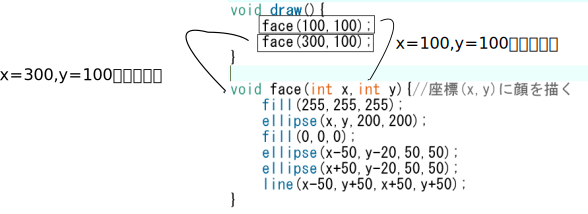
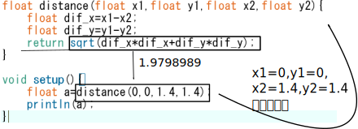
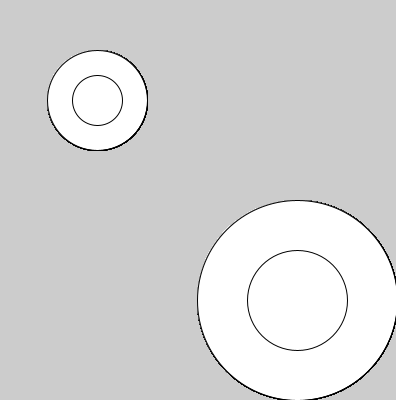
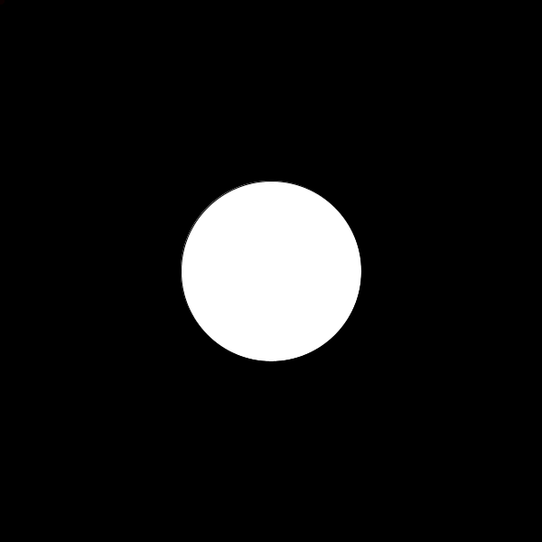

Chapter 7:関数を作る
前提知識
関数とは
実は今まで使ってきたrect()やfill()，print()などは関数と呼ばれるものです．
例えば，
rect(x,y,a,b)で，座標(x,y)を左上の頂点として，横a縦bの長さである長方形が描かれます．print(a)では，変数aの内容が表示されます．background(r,g,b)では，背景色(r,g,b)で画面がクリアされます．
このように，関数は0個以上の入力(rectの例だとx,y,a,b)に対して何かを行うものです．
そして，この関数は自分で作ることができます．
引数
rect(x,y,a,b);について，x,y,a,bをそれぞれ引数(ひきすう)と呼びます．
また，引数それぞれには型が決まっていてrectの場合はfloat型です
関数を作る
関数を次のようにして定義できます．
void 関数名(型 仮引数名，型 仮引数名，......){
//
}
例です．
void setup(){
size(600,600);
}
void draw(){
face(100,100);
face(300,100);
}
void face(int x,int y){//座標(x,y)に顔を描く
fill(255,255,255);
ellipse(x,y,200,200);
fill(0,0,0);
ellipse(x-50,y-20,50,50);
ellipse(x+50,y-20,50,50);
line(x-50,y+50,x+50,y+50);
}
この例ではface(x,y)という関数を作っています．

引数は個数はいくつでもよいです．
int x=0,y=0;
void setup(){
size(600,600);
}
void draw(){
clearScreen();
face(x,y);
x=x+4;y=y+3;
if(x>700)x=-100;
if(y>700)y=-100;
}
void clearScreen(){//引数が0個の関数
fill(255,255,255);
rect(0,0,600,600);
}
void face(int x,int y){//座標(x,y)に顔を描く
fill(255,255,255);
ellipse(x,y,200,200);
fill(0,0,0);
ellipse(x-50,y-20,50,50);
ellipse(x+50,y-20,50,50);
line(x-50,y+50,x+50,y+50);
}
clearScreen()という関数を作りました．引数が0個であり一見何の意味も成してないように見えますが，
fill(255,255,255);
rect(0,0,600,600);
が
clearScreen();
で，画面を真っ白にするという表現になったことで，何をしているかがわかりやすくなっています． このように，関数の定義による一連の動作の抽象化はコードの可読性が増し，汎用性も高くなります．
戻り値のある関数
戻り値がある関数は次のように書けます．
戻り値の型 関数名(型 仮引数名，型 仮引数名，......){
return 戻り値;
}
使い方の例です．
/*(x1,y1)と(x2,y2)のユークリッド距離を求める*/
float distance(float x1,float y1,float x2,float y2){
float dif_x=x1-x2;
float dif_y=y1-y2;
return sqrt(dif_x*dif_x+dif_y*dif_y);
}
void setup(){
float a=distance(0,0,1.4,1.4);
println(a);
}

演習7-1
processingには，
background()関数が用意されていて，色(r,g,b)で画面がクリアされる．background()関数と同じ挙動をするmyBackground()関数を作成せよ1．
ここでは，background()関数がProcessingに用意されていなかったとする．つまり，myBackground()関数内にbackground()を置く，ということではなく，rect()関数などで画面を塗りつぶす方法を使用する．
演習7-2
doubleCircle(x,y,r)と実行したとき，中心の座標が(x,y)で，直径がrとr/2の円による二重丸が描画される関数を作成してみよ．
実行例
void setup(){
size(400,400);
}
void draw(){
doubleCircle(100,100,100);
doubleCircle(300,300,200);
}

演習7-3
マウスポインタと円の衝突判定をする関数を作りたい．具体的には，次のプログラムを実行すると，円にマウスポインタが触れたら色が変更される，という動作をするように，
isInCircle関数を作成せよ． 
float ex=300;//円のx座標
float ey=300;//円のy座標
float r=100;//円の半径
void setup(){
size(600,600);
}
void clearScreen(){//引数が0個の関数
fill(255,255,255);
rect(0,0,600,600);
}
/*
中心(cx,cy)半径rの円と点(ax,ay)の位置関係を返す
円の内部(境界線を含む)に点が入っている場合は1
円の外に点がある場合は0
が変える
*/
int isInCircle(float cx,float cy,float r,float ax,float ay){
/*何かを書く*/
}
void draw(){
clearScreen();//画面をまっさらに
if(isInCircle(ex,ey,r,mouseX,mouseY)==1){
fill(255,255,255);
ellipse(ex,ey,r*2,r*2);
}else{
fill(0,255,255);
ellipse(ex,ey,r*2,r*2);
}
ex+=5;//円を動かす
if(ex>=600+r){ //右端にいったら左端に戻す
ex=-r;
}
}
解答
解答
画面の大きさがわからないため，十分に大きな長方形にしておく．
void myBackground(int r,int g,int b){
fill(r,g,b);
rect(-10,-10,3000,3000);
}
実は，システム変数を使えば必要以上に大きな長方形を描く必要がない．
また，noStroke()関数で図形の枠線をなくすことができる．
void myBackground(int r,int g,int b){
fill(r,g,b);
noStroke();//枠線なし
rect(0,0,width,height);
}
演習 7-2:
void doubleCircle(float x,float y,float r){
ellipse(x,y,r,r);
ellipse(x,y,r/2,r/2);
}
演習 7-3: 円の内部に入っているということは，円の中心からの距離が，円の半径の長さ以下ということです．円の中心と，ある点の位置の距離は三平方の定理で求めることができます．
/*
中心(cx,cy)半径rの円と点(ax,ay)の位置関係を返す
円の内部(境界線を含む)に点が入っている場合は1
円の外に点がある場合は0
が変える
*/
int isInCircle(float cx,float cy,float r,float ax,float ay){
float dx=(cx-ax);
float dy=(cy-ay);
if (sqrt(dx*dx+dy*dy)>=r){
return 1;
}else{
return 0;
}
}